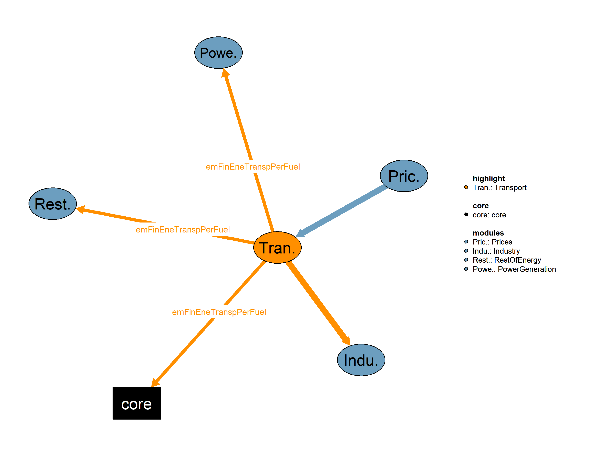

This is the Transport module.

| Description | Unit | A | |
|---|---|---|---|
| VMVPriceFuelAvgSub (allCy, DSBS, YTIME) |
Average fuel prices per subsector | \(k\$2015/toe\) | x |
| VMVPriceFuelSubsecCarVal (allCy, SBS, EF, YTIME) |
Fuel prices per subsector and fuel | \(k\$2015/toe\) | x |
| Description | Unit | |
|---|---|---|
| VMVConsElecNonSubIndTert (allCy, DSBS, YTIME) |
Consumption of non-substituable electricity in Industry and Tertiary | \(Mtoe\) |
| VMVDemFinEneTranspPerFuel (allCy, TRANSE, EF, YTIME) |
Final energy demand in transport subsectors per fuel | \(Mtoe\) |
| VMVLft (allCy, DSBS, EF, YTIME) |
Lifetime of technologies | \(years\) |
This is the legacy realization of the Transport module.
Equations*** Transport
QActivGoodsTransp(allCy,TRANSE,YTIME) "Compute goods transport activity"
QGapTranspActiv(allCy,TRANSE,YTIME) "Compute the gap in transport activity"
QConsSpecificFuel(allCy,TRANSE,TTECH,EF,YTIME) "Compute Specific Fuel Consumption"
QCostTranspPerMeanConsSize(allCy,TRANSE,RCon,TTECH,YTIME) "Compute transportation cost per mean and consumer size in KUS$2015 per vehicle"
QCostTranspPerVeh(allCy,TRANSE,RCon,TTECH,YTIME) "Compute transportation cost per mean and consumer size in KUS$2015 per vehicle"
QCostTranspMatFac(allCy,TRANSE,RCon,TTECH,YTIME) "Compute transportation cost including maturity factor"
QTechSortVarCost(allCy,TRANSE,Rcon,YTIME) "Compute technology sorting based on variable cost"
QShareTechTr(allCy,TRANSE,EF,YTIME) "Compute technology sorting based on variable cost and new equipment"
QConsTechTranspSectoral(allCy,TRANSE,TTECH,EF,YTIME) "Compute consumption of each technology in transport sectors"
QMEPcGdp(allCy,YTIME) "Compute passenger cars market extension (GDP dependent)"
QMEPcNonGdp(allCy,YTIME) "Compute passenger cars market extension (GDP independent)"
QStockPcYearly(allCy,YTIME) "Compute stock of passenger cars (in million vehicles)"
QNewRegPcYearly(allCy,YTIME) "Compute new registrations of passenger cars"
QActivPassTrnsp(allCy,TRANSE,YTIME) "Compute passenger transport acitivity"
QNumPcScrap(allCy,YTIME) "Compute scrapped passenger cars"
QPcOwnPcLevl(allCy,YTIME) "Compute ratio of car ownership over saturation car ownership"
QRateScrPc(allCy,YTIME) "Compute passenger cars scrapping rate"Interdependent Equations
Q01DemFinEneTranspPerFuel(allCy,TRANSE,EF,YTIME) "Compute final energy demand in transport per fuel"
Q01Lft(allCy,DSBS,EF,YTIME) "Compute the lifetime of passenger cars"
;
Variables*** Transport Variables
VActivGoodsTransp(allCy,TRANSE,YTIME) "Goods transport acitivity (Gtkm)"
VGapTranspActiv(allCy,TRANSE,YTIME) "Gap in transport activity to be filled by new technologies ()"
!! Gap for passenger cars (million vehicles)
!! Gap for all other passenger transportation modes (Gpkm)
!! Gap for all goods transport is measured (Gtkm)
VConsSpecificFuel(allCy,TRANSE,TTECH,EF,YTIME) "Specific Fuel Consumption ()"
!! SFC for passenger cars (ktoe/Gkm)
!! SFC for other passsenger transportation modes (ktoe/Gpkm)
!! SFC for trucks is measured (ktoe/Gtkm)
VCostTranspPerMeanConsSize(allCy,TRANSE,RCon,TTECH,YTIME) "Transportation cost per mean and consumer size (KUS$2015/vehicle)"
VCostTranspPerVeh(allCy,TRANSE,RCon,TTECH,YTIME) "Transportation cost per mean and consumer size (KUS$2015/vehicle)"
VCostTranspMatFac(allCy,TRANSE,RCon,TTECH,YTIME) "Transportation cost including maturity factor (KUS$2015/vehicle)"
VTechSortVarCost(allCy,TRANSE,Rcon,YTIME) "Technology sorting based on variable cost (1)"
VShareTechTr(allCy,TRANSE,EF,YTIME) "Technology share in new equipment (1)"
VConsTechTranspSectoral(allCy,TRANSE,TTECH,EF,YTIME) "Consumption of each technology and subsector (Mtoe)"
VMEPcGdp(allCy,YTIME) "Passenger cars market extension (GDP dependent)"
VMEPcNonGdp(allCy,YTIME) "Passenger cars market extension (GDP independent)"
VStockPcYearly(allCy,YTIME) "Stock of passenger cars (million vehicles)"
VNewRegPcYearly(allCy,YTIME) "Passenger cars new registrations (million vehicles)"
VActivPassTrnsp(allCy,TRANSE,YTIME) "Passenger transport acitivity (1)"
!! - Activity for passenger cars is measured in (000)km
!! - Activity for passenger aviation million passengers carried
!! - Activity for all other passenger transportation modes is measured in Gpkm
VNumPcScrap(allCy,YTIME) "Scrapped passenger cars (million vehicles)"
VPcOwnPcLevl(allCy,YTIME) "Ratio of car ownership over saturation car ownership (1)"
VRateScrPc(allCy,YTIME) "Scrapping rate of passenger cars (1)"Interdependent Equations
VMVConsElecNonSubIndTert(allCy,DSBS,YTIME) "Consumption of non-substituable electricity in Industry and Tertiary (Mtoe)"
VMVDemFinEneTranspPerFuel(allCy,TRANSE,EF,YTIME) "Final energy demand in transport subsectors per fuel (Mtoe)"
VMVLft(allCy,DSBS,EF,YTIME) "Lifetime of technologies (years)"
;GENERAL INFORMATION Equation format: “typical useful energy demand equation” The main explanatory variables (drivers) are activity indicators (economic activity) and corresponding energy costs. The type of “demand” is computed based on its past value, the ratio of the current and past activity indicators (with the corresponding elasticity), and the ratio of lagged energy costs (with the corresponding elasticities). This type of equation captures both short term and long term reactions to energy costs. * Transport This equation calculates the lifetime of passenger cars based on the scrapping rate of passenger cars. The lifetime is inversely proportional to the scrapping rate, meaning that as the scrapping rate increases, the lifetime of passenger cars decreases.
Q01Lft(allCy,DSBS,EF,YTIME)$(TIME(YTIME) $sameas(DSBS,"PC") $SECTTECH(DSBS,EF) $runCy(allCy))..
VMVLft(allCy,DSBS,EF,YTIME)
=E=
1/VRateScrPc(allCy,YTIME);This equation calculates the activity for goods transport, considering different types of goods transport such as trucks and other freight transport. The activity is influenced by factors such as GDP, population, fuel prices, and elasticities. The equation includes terms for trucks and other freight transport modes.
QActivGoodsTransp(allCy,TRANSE,YTIME)$(TIME(YTIME) $TRANG(TRANSE) $runCy(allCy))..
VActivGoodsTransp(allCy,TRANSE,YTIME)
=E=
(
VActivGoodsTransp(allCy,TRANSE,YTIME-1)
* [(iGDP(YTIME,allCy)/iPop(YTIME,allCy))/(iGDP(YTIME-1,allCy)/iPop(YTIME-1,allCy))]**iElastA(allCy,TRANSE,"a",YTIME)
* (iPop(YTIME,allCy)/iPop(YTIME-1,allCy))
* (VMVPriceFuelAvgSub(allCy,TRANSE,YTIME)/VMVPriceFuelAvgSub(allCy,TRANSE,YTIME-1))**iElastA(allCy,TRANSE,"c1",YTIME)
* (VMVPriceFuelAvgSub(allCy,TRANSE,YTIME-1)/VMVPriceFuelAvgSub(allCy,TRANSE,YTIME-2))**iElastA(allCy,TRANSE,"c2",YTIME)
* prod(kpdl,
[(VMVPriceFuelAvgSub(allCy,TRANSE,YTIME-ord(kpdl))/
VMVPriceFuelAvgSub(allCy,TRANSE,YTIME-(ord(kpdl)+1)))/
(iCGI(allCy,YTIME)**(1/6))]**(iElastA(allCy,TRANSE,"c3",YTIME)*iFPDL(TRANSE,KPDL))
)
)$sameas(TRANSE,"GU") !!trucks
+
(
VActivGoodsTransp(allCy,TRANSE,YTIME-1)
* [(iGDP(YTIME,allCy)/iPop(YTIME,allCy))/(iGDP(YTIME-1,allCy)/iPop(YTIME-1,allCy))]**iElastA(allCy,TRANSE,"a",YTIME)
* (VMVPriceFuelAvgSub(allCy,TRANSE,YTIME)/VMVPriceFuelAvgSub(allCy,TRANSE,YTIME-1))**iElastA(allCy,TRANSE,"c1",YTIME)
* (VMVPriceFuelAvgSub(allCy,TRANSE,YTIME-1)/VMVPriceFuelAvgSub(allCy,TRANSE,YTIME-2))**iElastA(allCy,TRANSE,"c2",YTIME)
* prod(kpdl,
[(VMVPriceFuelAvgSub(allCy,TRANSE,YTIME-ord(kpdl))/
VMVPriceFuelAvgSub(allCy,TRANSE,YTIME-(ord(kpdl)+1)))/
(iCGI(allCy,YTIME)**(1/6))]**(iElastA(allCy,TRANSE,"c3",YTIME)*iFPDL(TRANSE,KPDL))
)
* (VActivGoodsTransp(allCy,"GU",YTIME)/VActivGoodsTransp(allCy,"GU",YTIME-1))**iElastA(allCy,TRANSE,"c4",YTIME)
)$(not sameas(TRANSE,"GU")); !!other freight transportThis equation calculates the gap in transport activity, which represents the activity that needs to be filled by new technologies. The gap is calculated separately for passenger cars, other passenger transportation modes, and goods transport. The equation involves various terms, including the new registrations of passenger cars, the activity of passenger and goods transport, and considerations for different types of transportation modes.
QGapTranspActiv(allCy,TRANSE,YTIME)$(TIME(YTIME)$(runCy(allCy)))..
VGapTranspActiv(allCy,TRANSE,YTIME)
=E=
VNewRegPcYearly(allCy,YTIME)$sameas(TRANSE,"PC")
+
(
( [VActivPassTrnsp(allCy,TRANSE,YTIME) - VActivPassTrnsp(allCy,TRANSE,YTIME-1) + VActivPassTrnsp(allCy,TRANSE,YTIME-1)/
(sum((TTECH)$SECTTECH(TRANSE,TTECH),VMVLft(allCy,TRANSE,TTECH,YTIME-1))/TECHS(TRANSE))] +
SQRT( SQR([VActivPassTrnsp(allCy,TRANSE,YTIME) - VActivPassTrnsp(allCy,TRANSE,YTIME-1) + VActivPassTrnsp(allCy,TRANSE,YTIME-1)/
(sum((TTECH)$SECTTECH(TRANSE,TTECH),VMVLft(allCy,TRANSE,TTECH,YTIME-1))/TECHS(TRANSE))]) + SQR(1e-4) ) )/2
)$(TRANP(TRANSE) $(not sameas(TRANSE,"PC")))
+
(
( [VActivGoodsTransp(allCy,TRANSE,YTIME) - VActivGoodsTransp(allCy,TRANSE,YTIME-1) + VActivGoodsTransp(allCy,TRANSE,YTIME-1)/
(sum((EF)$SECTTECH(TRANSE,EF),VMVLft(allCy,TRANSE,EF,YTIME-1))/TECHS(TRANSE))] + SQRT( SQR([VActivGoodsTransp(allCy,TRANSE,YTIME) - VActivGoodsTransp(allCy,TRANSE,YTIME-1) + VActivGoodsTransp(allCy,TRANSE,YTIME-1)/
(sum((EF)$SECTTECH(TRANSE,EF),VMVLft(allCy,TRANSE,EF,YTIME-1))/TECHS(TRANSE))]) + SQR(1e-4) ) )/2
)$TRANG(TRANSE);This equation calculates the specific fuel consumption for a given technology, subsector, energy form, and time. The specific fuel consumption depends on various factors, including fuel prices and elasticities. The equation involves a product term over a set of Polynomial Distribution Lags and considers the elasticity of fuel prices.
QConsSpecificFuel(allCy,TRANSE,TTECH,EF,YTIME)$(TIME(YTIME) $SECTTECH(TRANSE,EF) $TTECHtoEF(TTECH,EF) $runCy(allCy))..
VConsSpecificFuel(allCy,TRANSE,TTECH,EF,YTIME)
=E=
VConsSpecificFuel(allCy,TRANSE,TTECH,EF,YTIME-1) * prod(KPDL,
(
VMVPriceFuelSubsecCarVal(allCy,TRANSE,EF,YTIME-ord(KPDL))/VMVPriceFuelSubsecCarVal(allCy,TRANSE,EF,YTIME-(ord(KPDL)+1))
)**(iElastA(allCy,TRANSE,"c5",YTIME)*iFPDL(TRANSE,KPDL))
);This equation calculates the transportation cost per mean and consumer size in kEuro per vehicle. It involves several terms, including capital costs, variable costs, and fuel costs. The equation considers different technologies and their associated costs, as well as factors like the discount rate, specific fuel consumption, and annual .
QCostTranspPerMeanConsSize(allCy,TRANSE,RCon,TTECH,YTIME)$(TIME(YTIME) $SECTTECH(TRANSE,TTECH) $(ord(Rcon) le iNcon(TRANSE)+1) $runCy(allCy))..
VCostTranspPerMeanConsSize(allCy,TRANSE,RCon,TTECH,YTIME)
=E=
(
(
(iDisc(allCy,TRANSE,YTIME)*exp(iDisc(allCy,TRANSE,YTIME)*VMVLft(allCy,TRANSE,TTECH,YTIME)))
/
(exp(iDisc(allCy,TRANSE,YTIME)*VMVLft(allCy,TRANSE,TTECH,YTIME)) - 1)
) * iCapCostTech(allCy,TRANSE,TTECH,YTIME) * iCGI(allCy,YTIME)
+ iFixOMCostTech(allCy,TRANSE,TTECH,YTIME) +
(
(sum(EF$TTECHtoEF(TTECH,EF),VConsSpecificFuel(allCy,TRANSE,TTECH,EF,YTIME)*VMVPriceFuelSubsecCarVal(allCy,TRANSE,EF,YTIME)) )$(not PLUGIN(TTECH))
+
(sum(EF$(TTECHtoEF(TTECH,EF) $(not sameas("ELC",EF))),
(1-iShareAnnMilePlugInHybrid(allCy,YTIME))*VConsSpecificFuel(allCy,TRANSE,TTECH,EF,YTIME)*VMVPriceFuelSubsecCarVal(allCy,TRANSE,EF,YTIME))
+ iShareAnnMilePlugInHybrid(allCy,YTIME)*VConsSpecificFuel(allCy,TRANSE,TTECH,"ELC",YTIME)*VMVPriceFuelSubsecCarVal(allCy,TRANSE,"ELC",YTIME)
)$PLUGIN(TTECH)
+ iVarCostTech(allCy,TRANSE,TTECH,YTIME)
+ (VRenValue(YTIME)/1000)$( not RENEF(TTECH))
)
* iAnnCons(allCy,TRANSE,"smallest") * (iAnnCons(allCy,TRANSE,"largest")/iAnnCons(allCy,TRANSE,"smallest"))**((ord(Rcon)-1)/iNcon(TRANSE))
);This equation calculates the transportation cost per mean and consumer size. It involves taking the inverse fourth power of the variable representing the transportation cost per mean and consumer size.
QCostTranspPerVeh(allCy,TRANSE,rCon,TTECH,YTIME)$(TIME(YTIME) $SECTTECH(TRANSE,TTECH) $(ord(rCon) le iNcon(TRANSE)+1) $runCy(allCy))..
VCostTranspPerVeh(allCy,TRANSE,rCon,TTECH,YTIME)
=E=
VCostTranspPerMeanConsSize(allCy,TRANSE,rCon,TTECH,YTIME)**(-1);This equation calculates the transportation cost, including the maturity factor. It involves multiplying the maturity factor for a specific technology and subsector by the transportation cost per vehicle for the mean and consumer size. The result is a variable representing the transportation cost, including the maturity factor.
QCostTranspMatFac(allCy,TRANSE,RCon,TTECH,YTIME)$(TIME(YTIME) $SECTTECH(TRANSE,TTECH) $(ord(rCon) le iNcon(TRANSE)+1) $runCy(allCy))..
VCostTranspMatFac(allCy,TRANSE,RCon,TTECH,YTIME)
=E=
iMatrFactor(allCy,TRANSE,TTECH,YTIME) * VCostTranspPerVeh(allCy,TRANSE,rCon,TTECH,YTIME);This equation calculates the technology sorting based on variable cost. It involves the summation of transportation costs, including the maturity factor, for each technology and subsector. The result is a variable representing the technology sorting based on variable cost.
QTechSortVarCost(allCy,TRANSE,rCon,YTIME)$(TIME(YTIME) $(ord(rCon) le iNcon(TRANSE)+1) $runCy(allCy))..
VTechSortVarCost(allCy,TRANSE,rCon,YTIME)
=E=
sum((TTECH)$SECTTECH(TRANSE,TTECH), VCostTranspMatFac(allCy,TRANSE,rCon,TTECH,YTIME));This equation calculates the share of each technology in the total sectoral use. It takes into account factors such as the maturity factor, cumulative distribution function of consumer size groups, transportation cost per mean and consumer size, distribution function of consumer size groups, and technology sorting based on variable cost. The result is a dimensionless value representing the share of each technology in the total sectoral use.
QShareTechTr(allCy,TRANSE,TTECH,YTIME)$(TIME(YTIME) $SECTTECH(TRANSE,TTECH) $runCy(allCy))..
VShareTechTr(allCy,TRANSE,TTECH,YTIME)
=E=
iMatrFactor(allCy,TRANSE,TTECH,YTIME) / iCumDistrFuncConsSize(allCy,TRANSE)
* sum( Rcon$(ord(Rcon) le iNcon(TRANSE)+1),
VCostTranspPerVeh(allCy,TRANSE,RCon,TTECH,YTIME)
* iDisFunConSize(allCy,TRANSE,RCon) / VTechSortVarCost(allCy,TRANSE,RCon,YTIME)
);This equation calculates the consumption of each technology in transport sectors. It considers various factors such as the lifetime of the technology, average capacity per vehicle, load factor, scrapping rate, and specific fuel consumption. The equation also takes into account the technology’s variable cost for new equipment and the gap in transport activity to be filled by new technologies. The result is expressed in million tonnes of oil equivalent.
QConsTechTranspSectoral(allCy,TRANSE,TTECH,EF,YTIME)$(TIME(YTIME) $SECTTECH(TRANSE,TTECH) $TTECHtoEF(TTECH,EF) $runCy(allCy))..
VConsTechTranspSectoral(allCy,TRANSE,TTECH,EF,YTIME)
=E=
VConsTechTranspSectoral(allCy,TRANSE,TTECH,EF,YTIME-1) *
(
(
((VMVLft(allCy,TRANSE,TTECH,YTIME-1)-1)/VMVLft(allCy,TRANSE,TTECH,YTIME-1))
*(iAvgVehCapLoadFac(allCy,TRANSE,"CAP",YTIME-1)*iAvgVehCapLoadFac(allCy,TRANSE,"LF",YTIME-1))
/(iAvgVehCapLoadFac(allCy,TRANSE,"CAP",YTIME)*iAvgVehCapLoadFac(allCy,TRANSE,"LF",YTIME))
)$(not sameas(TRANSE,"PC"))
+
(1 - VRateScrPc(allCy,YTIME))$sameas(TRANSE,"PC")
)
+
VShareTechTr(allCy,TRANSE,TTECH,YTIME) *
(
VConsSpecificFuel(allCy,TRANSE,TTECH,EF,YTIME)$(not PLUGIN(TTECH))
+
( ((1-iShareAnnMilePlugInHybrid(allCy,YTIME))*VConsSpecificFuel(allCy,TRANSE,TTECH,EF,YTIME))$(not sameas("ELC",EF))
+ iShareAnnMilePlugInHybrid(allCy,YTIME)*VConsSpecificFuel(allCy,TRANSE,TTECH,"ELC",YTIME))$PLUGIN(TTECH)
)/1000
* VGapTranspActiv(allCy,TRANSE,YTIME) *
(
(
(iAvgVehCapLoadFac(allCy,TRANSE,"CAP",YTIME-1)*iAvgVehCapLoadFac(allCy,TRANSE,"LF",YTIME-1))
/ (iAvgVehCapLoadFac(allCy,TRANSE,"CAP",YTIME)*iAvgVehCapLoadFac(allCy,TRANSE,"LF",YTIME))
)$(not sameas(TRANSE,"PC"))
+
(VActivPassTrnsp(allCy,TRANSE,YTIME))$sameas(TRANSE,"PC")
);This equation calculates the final energy demand in transport for each fuel within a specific transport subsector. It sums up the consumption of each technology and subsector for the given fuel. The result is expressed in million tonnes of oil equivalent.
Q01DemFinEneTranspPerFuel(allCy,TRANSE,EF,YTIME)$(TIME(YTIME) $SECTTECH(TRANSE,EF) $runCy(allCy))..
VMVDemFinEneTranspPerFuel(allCy,TRANSE,EF,YTIME)
=E=
sum((TTECH)$(SECTTECH(TRANSE,TTECH) $TTECHtoEF(TTECH,EF) ), VConsTechTranspSectoral(allCy,TRANSE,TTECH,EF,YTIME));This equation calculates the final energy demand in different transport subsectors by summing up the final energy demand for each energy form within each transport subsector. The result is expressed in million tonnes of oil equivalent.
$ontext
qDemFinEneSubTransp(allCy,TRANSE,YTIME)$(TIME(YTIME) $runCy(allCy))..
vDemFinEneSubTransp(allCy,TRANSE,YTIME)
=E=
sum(EF,VMVDemFinEneTranspPerFuel(allCy,TRANSE,EF,YTIME));
$offtextThis equation calculates the GDP-dependent market extension of passenger cars. It takes into account transportation characteristics, the GDP-dependent market extension from the previous year, and the ratio of GDP to population for the current and previous years. The elasticity parameter (a) influences the sensitivity of market extension to changes in GDP.
QMEPcGdp(allCy,YTIME)$(TIME(YTIME)$(runCy(allCy)))..
VMEPcGdp(allCy,YTIME)
=E=
iTransChar(allCy,"RES_MEXTV",YTIME) * VMEPcGdp(allCy,YTIME-1) *
[(iGDP(YTIME,allCy)/iPop(YTIME,allCy)) / (iGDP(YTIME-1,allCy)/iPop(YTIME-1,allCy))] ** iElastA(allCy,"PC","a",YTIME);This equation calculates the market extension of passenger cars that is independent of GDP. It involves various parameters such as transportation characteristics, Gompertz function parameters (S1, S2, S3), the ratio of the previous year’s stock of passenger cars to the previous year’s population, and the saturation ratio .
QMEPcNonGdp(allCy,YTIME)$(TIME(YTIME)$(runCy(allCy)))..
VMEPcNonGdp(allCy,YTIME)
=E=
iTransChar(allCy,"RES_MEXTF",YTIME) * iSigma(allCy,"S1") * EXP(iSigma(allCy,"S2") * EXP(iSigma(allCy,"S3") * VPcOwnPcLevl(allCy,YTIME))) *
VStockPcYearly(allCy,YTIME-1) / (iPop(YTIME-1,allCy) * 1000);This equation calculates the stock of passenger cars in million vehicles for a given year. The stock is influenced by the previous year’s stock, population, and market extension factors, both GDP-dependent and independent.
QStockPcYearly(allCy,YTIME)$(TIME(YTIME)$(runCy(allCy)))..
VStockPcYearly(allCy,YTIME)
=E=
(VStockPcYearly(allCy,YTIME-1)/(iPop(YTIME-1,allCy)*1000) + VMEPcNonGdp(allCy,YTIME) + VMEPcGdp(allCy,YTIME)) *
iPop(YTIME,allCy) * 1000;This equation calculates the new registrations of passenger cars for a given year. It considers the market extension due to GDP-dependent and independent factors. The new registrations are influenced by the population, GDP, and the number of scrapped vehicles from the previous year.
QNewRegPcYearly(allCy,YTIME)$(TIME(YTIME)$(runCy(allCy)))..
VNewRegPcYearly(allCy,YTIME)
=E=
(VMEPcNonGdp(allCy,YTIME) + VMEPcGdp(allCy,YTIME)) * (iPop(YTIME,allCy)*1000) !! new cars due to GDP
- VStockPcYearly(allCy,YTIME-1)*(1 - iPop(YTIME,allCy)/iPop(YTIME-1,allCy)) !! new cars due to population
+ VNumPcScrap(allCy,YTIME); !! new cars due to scrappingThis equation calculates the passenger transport activity for various modes of transportation, including passenger cars, aviation, and other passenger transportation modes. The activity is influenced by factors such as fuel prices, GDP per capita, and elasticities specific to each transportation mode. The equation uses past activity levels and price trends to estimate the current year’s activity. The coefficients and exponents in the equation represent the sensitivities of activity to changes in various factors.
QActivPassTrnsp(allCy,TRANSE,YTIME)$(TIME(YTIME) $TRANP(TRANSE) $runCy(allCy))..
VActivPassTrnsp(allCy,TRANSE,YTIME)
=E=
( !! passenger cars
VActivPassTrnsp(allCy,TRANSE,YTIME-1) *
(VMVPriceFuelAvgSub(allCy,TRANSE,YTIME)/VMVPriceFuelAvgSub(allCy,TRANSE,YTIME-1))**iElastA(allCy,TRANSE,"b1",YTIME) *
(VMVPriceFuelAvgSub(allCy,TRANSE,YTIME-1)/VMVPriceFuelAvgSub(allCy,TRANSE,YTIME-2))**iElastA(allCy,TRANSE,"b2",YTIME) *
[(VStockPcYearly(allCy,YTIME-1)/(iPop(YTIME-1,allCy)*1000))/(VStockPcYearly(allCy,YTIME)/(iPop(YTIME,allCy)*1000))]**iElastA(allCy,TRANSE,"b3",YTIME) *
[(iGDP(YTIME,allCy)/iPop(YTIME,allCy))/(iGDP(YTIME-1,allCy)/iPop(YTIME-1,allCy))]**iElastA(allCy,TRANSE,"b4",YTIME)
)$sameas(TRANSE,"PC") +
( !! passenger aviation
VActivPassTrnsp(allCy,TRANSE,YTIME-1) *
[(iGDP(YTIME,allCy)/iPop(YTIME,allCy))/(iGDP(YTIME-1,allCy)/iPop(YTIME-1,allCy))]**iElastA(allCy,TRANSE,"a",YTIME) *
(VMVPriceFuelAvgSub(allCy,TRANSE,YTIME)/VMVPriceFuelAvgSub(allCy,TRANSE,YTIME-1))**iElastA(allCy,TRANSE,"c1",YTIME) *
(VMVPriceFuelAvgSub(allCy,TRANSE,YTIME-1)/VMVPriceFuelAvgSub(allCy,TRANSE,YTIME-2))**iElastA(allCy,TRANSE,"c2",YTIME)
)$sameas(TRANSE,"PA") +
( !! other passenger transportation modes
VActivPassTrnsp(allCy,TRANSE,YTIME-1) *
[(iGDP(YTIME,allCy)/iPop(YTIME,allCy))/(iGDP(YTIME-1,allCy)/iPop(YTIME-1,allCy))]**iElastA(allCy,TRANSE,"a",YTIME) *
(VMVPriceFuelAvgSub(allCy,TRANSE,YTIME)/VMVPriceFuelAvgSub(allCy,TRANSE,YTIME-1))**iElastA(allCy,TRANSE,"c1",YTIME) *
(VMVPriceFuelAvgSub(allCy,TRANSE,YTIME-1)/VMVPriceFuelAvgSub(allCy,TRANSE,YTIME-2))**iElastA(allCy,TRANSE,"c2",YTIME) *
[(VStockPcYearly(allCy,YTIME)*VActivPassTrnsp(allCy,"PC",YTIME))/(VStockPcYearly(allCy,YTIME-1)*VActivPassTrnsp(allCy,"PC",YTIME-1))]**iElastA(allCy,TRANSE,"c4",YTIME) *
prod(kpdl,
[(VMVPriceFuelAvgSub(allCy,TRANSE,YTIME-ord(kpdl))/
VMVPriceFuelAvgSub(allCy,TRANSE,YTIME-(ord(kpdl)+1)))/
(iCGI(allCy,YTIME)**(1/6))]**(iElastA(allCy,TRANSE,"c3",YTIME)*iFPDL(TRANSE,KPDL))
)
)$(NOT (sameas(TRANSE,"PC") or sameas(TRANSE,"PA")));This equation calculates the number of scrapped passenger cars based on the scrapping rate and the stock of passenger cars from the previous year. The scrapping rate represents the proportion of cars that are retired from the total stock, and it influences the annual number of cars taken out of service.
QNumPcScrap(allCy,YTIME)$(TIME(YTIME)$(runCy(allCy)))..
VNumPcScrap(allCy,YTIME)
=E=
VRateScrPc(allCy,YTIME) * VStockPcYearly(allCy,YTIME-1);This equation calculates the ratio of car ownership over the saturation car ownership level. The calculation is based on a Gompertz function, taking into account the stock of passenger cars, the population, and the market saturation level from the previous year. This ratio provides an estimate of the level of car ownership relative to the saturation point, considering the dynamics of the market over time.
QPcOwnPcLevl(allCy,YTIME)$(TIME(YTIME)$(runCy(allCy)))..
VPcOwnPcLevl(allCy,YTIME) !! level of saturation of gompertz function
=E=
( (VStockPcYearly(allCy,YTIME-1)/(iPop(YTIME-1,allCy)*1000)) / iPassCarsMarkSat(allCy) + 1 - SQRT( SQR((VStockPcYearly(allCy,YTIME-1)/(iPop(YTIME-1,allCy)*1000)) / iPassCarsMarkSat(allCy) - 1) ) )/2;This equation calculates the scrapping rate of passenger cars. The scrapping rate is influenced by the ratio of Gross Domestic Product (GDP) to the population, reflecting economic and demographic factors. The scrapping rate from the previous year is also considered, allowing for a dynamic estimation of the passenger cars scrapping rate over time.
QRateScrPc(allCy,YTIME)$(TIME(YTIME)$(runCy(allCy)))..
VRateScrPc(allCy,YTIME)
=E=
[(iGDP(YTIME,allCy)/iPop(YTIME,allCy)) / (iGDP(YTIME-1,allCy)/iPop(YTIME-1,allCy))]**0.5
* VRateScrPc(allCy,YTIME-1);table iGDP(YTIME,allCy) "GDP (billion US$2015)"
$ondelim
$include "./iGDP.csvr"
$offdelim
;
table iPop(YTIME,allCy) "Population (billion)"
$ondelim
$include "./iPop.csvr"
$offdelim
;
table iCapDataLoadFacEachTransp(TRANSE,TRANSUSE) "Capacity data and Load factor for each transportation mode (passenger or tonnes/vehicle)"
Cap LF
PC 2
PB 40 0.4
PT 300 0.4
PN 300 0.5
PA 180 0.65
GU 5 0.7
GT 600 0.8
GN 1500 0.9
;
table iDataPassCars(allCy,GompSet1,Gompset2) "Initial Data for Passenger Cars ()"
scr
CHA.PC 0.0201531648401507
IND.PC 0.0201531648401507
USA.PC 0.0418811968705786
;
table iNewReg(allCy,YTIME) "new car registrations per year"
$ondelim
$include"./iNewReg.csv"
$offdelim
;
table iInitSpecFuelCons(allCy,TRANSE,TTECH,EF,YTIME) "Initial Specific fuel consumption for all countries ()";
table iDataChpPowGen(EF,YTIME,CHPPGSET) "Data for power generation costs (various)"
IC FC LFT VOM AVAIL BOILEFF
STE1AL.2010 2.75 58.4621 35 5.19746 0.85 0.699301
STE1AL.2020 2.75 52.9702 5.01869 0.699301
STE1AL.2050 2.75 48.5081 3.3689 0.699301
STE1AH.2010 2.2814 50.609 35 4.4306 0.85 0.746269
STE1AH.2020 2.2814 43.5126 4.2842 0.746269
STE1AH.2050 2.2814 37.7468 4.08204 0.746269
STE1AD.2010 1.276 20.01 15 2.67042 0.29 0.813008
STE1AD.2020 1.276 20.01 2.67042 0.813008
STE1AD.2050 1.276 20.01 2.67042 0.813008
STE1AR.2010 1.782 27.945 30 3.72938 0.8 0.78125
STE1AR.2020 1.782 27.945 3.72938 0.78125
STE1AR.2050 1.782 27.945 3.72938 0.78125
STE1AG.2010 1.16358 19.35 25 2.56461 0.8 0.819672
STE1AG.2020 1.09263 19.35 2.44861 0.819672
STE1AG.2050 1.06425 19.35 2.23212 0.819672
STE1AB.2010 3.2208 57.096 30 6.29638 0.85 0.746269
STE1AB.2020 3.0866 54.717 6.05137 0.746269
STE1AB.2050 2.8853 51.1485 5.61708 0.746269
STE1AH2F.2010 1.16358 19.35 15 2.56461 0.8 0.829672
STE1AH2F.2020 1.09263 19.35 2.44861 0.829672
STE1AH2F.2050 1.06425 19.35 2.23212 0.829672
;
parameter iPlugHybrFractData(YTIME) "Plug in hybrid fraction of mileage" /
2010 0.5
2011 0.504444
2012 0.508889
2013 0.513333
2014 0.517778
2015 0.522222
2016 0.526667
2017 0.531111
2018 0.535556
2019 0.54
2020 0.544444
2021 0.548889
2022 0.553333
2023 0.557778
2024 0.562222
2025 0.566667
2026 0.571111
2027 0.575556
2028 0.58
2029 0.584444
2030 0.588889
2031 0.593333
2032 0.597778
2033 0.602222
2034 0.606667
2035 0.611111
2036 0.615556
2037 0.62
2038 0.624444
2039 0.628889
2040 0.633333
2041 0.637778
2042 0.642222
2043 0.646667
2044 0.651111
2045 0.655556
2046 0.66
2047 0.664444
2048 0.668889
2049 0.673333
2050 0.677778
2051 0.682222
2052 0.686667
2053 0.691111
2054 0.695556
2055 0.7
2056 0.688889
2057 0.690741
2058 0.69216
2059 0.693076
2060 0.693404
2061 0.693045
2062 0.691886
2063 0.692385
2064 0.692659
2065 0.692743
2066 0.692687
2067 0.692567
2068 0.692488
2069 0.692588
2070 0.692622
2071 0.692616
2072 0.692595
2073 0.692579
2074 0.692581
2075 0.692597
2076 0.692598
2077 0.692594
2078 0.692591
2079 0.69259
2080 0.692592
2081 0.692594
2082 0.692593
2083 0.692592
2084 0.692592
2085 0.692592
2086 0.692593
2087 0.692593
2088 0.692593
2089 0.692593
2090 0.692593
2091 0.692593
2092 0.692593
2093 0.692593
2094 0.692593
2095 0.692593
2096 0.692593
2097 0.692593
2098 0.692593
2099 0.692593
2100 0.692593
/
;
parameter iInitSpecFuelConsData(TRANSE,TTECH,EF) "Initial Specific fuel consumption ()" /
PC.LPG.LPG 65.88
PC.GSL.GSL 73.2
PC.GDO.GDO 54.9
PC.NGS.NGS 84.3391
PC.MET.MET 71.84
PC.ETH.ETH 102.1
PC.BGDO.BGDO 54.9
PC.H2F.H2F 24.15
PC.ELC.ELC 20.496
PC.PHEVGSL.GSL 43.92
PC.PHEVGSL.ELC 20.496
PC.PHEVGDO.GDO 32.94
PC.PHEVGDO.ELC 20.496
PC.CHEVGSL.GSL 45.384
PC.CHEVGDO.GDO 40.8456
PT.GDO.GDO 18.6313
PT.MET.MET 12.6
PT.H2F.H2F 8.9
PT.ELC.ELC 2.73638
PA.H2F.H2F 21.7
GU.LPG.LPG 54.1073
GU.GSL.GSL 60.1192
GU.GDO.GDO 45.0894
GU.NGS.NGS 66
GU.MET.MET 56.2
GU.ETH.ETH 80
GU.BGDO.BGDO 45.0894
GU.H2F.H2F 13.5268
GU.ELC.ELC 27.0536
GU.PHEVGSL.GSL 34.4
GU.PHEVGSL.ELC 21.8
GU.PHEVGDO.GDO 27.0536
GU.PHEVGDO.ELC 21.8
GU.CHEVGDO.GDO 21.8
GT.GDO.GDO 33.629
GT.MET.MET 78
GT.H2F.H2F 92
GT.ELC.ELC 11.5245
GN.GSL.GSL 22.8
GN.GDO.GDO 15.2
GN.H2F.H2F 8.14286
/
;
Parameters
iPlugHybrFractOfMileage(ELSH_SET,YTIME) "Plug in hybrid fraction of mileage covered by electricity, residualls on GDP-Depnd car market ext (1)"
iSpeFuelConsCostBy(allCy,SBS,TTECH,EF) "Specific fuel consumption cost in Base year (ktoe/Gpkm or ktoe/Gtkm or ktoe/Gvkm)"
iSigma(allCy,SG) "S parameters of Gompertz function for passenger cars vehicle km (1)"
iGdpPassCarsMarkExt(allCy) "GDP-dependent passenger cars market extension (GDP/capita)"
iPassCarsScrapRate(allCy) "Passenger cars scrapping rate (1)"
iShareAnnMilePlugInHybrid(allCy,YTIME) "Share of annual mileage of a plug-in hybrid which is covered by electricity (1)"
iAvgVehCapLoadFac(allCy,TRANSE,TRANSUSE,YTIME) "Average capacity/vehicle and load factor (tn/veh or passenegers/veh)"
iTechLft(allCy,SBS,EF,YTIME) "Technical Lifetime. For passenger cars it is a variable (1)"
iPassCarsMarkSat(allCy) "Passenger cars market saturation (1)"
;
iInitSpecFuelCons(runCy,TRANSE,TTECH,EF,YTIME) = iInitSpecFuelConsData(TRANSE,TTECH,EF) ;
iSpeFuelConsCostBy(runCy,TRANSE,TTECH,EF) = iInitSpecFuelCons(runCy,TRANSE,TTECH,EF,"2017");
iDataPassCars(runCy,"PC","S1") = 1.0;
iDataPassCars(runCy,"PC","S2") = -0.01;
iDataPassCars(runCy,"PC","S3") = 6.5;
iSigma(runCy,"S1") = iDataPassCars(runCy,"PC","S1");
iSigma(runCy,"S2") = iDataPassCars(runCy,"PC","S2");
iSigma(runCy,"S3") = iDataPassCars(runCy,"PC","S3");
iDataChpPowGen(EF,YTIME,"IC") = iDataChpPowGen(EF,YTIME,"IC") * 1.3;
iDataChpPowGen(EF,YTIME,"FC") = iDataChpPowGen(EF,YTIME,"FC") * 1.3;
iDataChpPowGen(EF,YTIME,"VOM") = iDataChpPowGen(EF,YTIME,"VOM") * 1.3;
iPassCarsMarkSat(runCy) = iDataPassCars(runCy,"PC","SAT");
iFuelConsTRANSE(runCy,TRANSE,EF,YTIME)$(SECTTECH(TRANSE,EF) $(iFuelConsTRANSE(runCy,TRANSE,EF,YTIME)<=0)) = 1e-6;
iPlugHybrFractOfMileage(ELSH_SET,YTIME) = iPlugHybrFractData(YTIME);
iShareAnnMilePlugInHybrid(runCy,YTIME)$an(YTIME) = iPlugHybrFractOfMileage("ELSH",YTIME);
iAvgVehCapLoadFac(runCy,TRANSE,TRANSUSE,YTIME) = iCapDataLoadFacEachTransp(TRANSE,TRANSUSE);
iTechLft(runCy,TRANSE,EF,YTIME) = iDataTransTech(TRANSE,EF,"LFT",YTIME);
iTechLft(runCy,INDSE,EF,YTIME) = iDataIndTechnology(INDSE,EF,"LFT");
iTechLft(runCy,DOMSE,EF,YTIME) = iDataDomTech(DOMSE,EF,"LFT");
iTechLft(runCy,NENSE,EF,YTIME) = iDataNonEneSec(NENSE,EF,"LFT");VARIABLE INITIALISATION
iPassCarsMarkSat(runCy) = 0.7 ;
VShareTechTr.FX(runCy,TRANSE,EF2,YTIME)$(not An(YTIME)) = iFuelConsTRANSE(runCy,TRANSE,EF2,YTIME)/sum(EF$(SECTTECH(TRANSE,EF)),iFuelConsTRANSE(runCy,TRANSE,EF,YTIME));
VShareTechTr.FX(runCy,TRANSE,TTECH,YTIME)$( SECTTECH(TRANSE,TTECH) $(not AN(YTIME))) = 0;
VStockPcYearly.UP(runCy,YTIME) = 10000; !! upper bound of VStockPcYearly is 10000 million vehicles
VStockPcYearly.L(runCy,YTIME) = 0.1;
VStockPcYearly.FX(runCy,YTIME)$(not An(YTIME)) = iActv(YTIME,runCy,"PC");
VActivPassTrnsp.L(runCy,TRANSE,YTIME) = 0.1;
VActivPassTrnsp.FX(runCy,"PC",YTIME)$(not AN(YTIME)) = iTransChar(runCy,"KM_VEH",YTIME);
VActivPassTrnsp.FX(runCy,TRANP,YTIME) $(not AN(YTIME) and not sameas(TRANP,"PC")) = iActv(YTIME,runCy,TRANP);
VActivPassTrnsp.FX(runCy,TRANSE,YTIME)$(not TRANP(TRANSE)) = 0;
VNewRegPcYearly.FX(runCy,YTIME)$(not an(ytime)) = iNewReg(runCy,YTIME);
VTechSortVarCost.LO(runCy,TRANSE,Rcon,YTIME) = 1e-20;
VTechSortVarCost.L(runCy,TRANSE,Rcon,YTIME) = 0.1;
VRateScrPc.UP(runCy,YTIME) = 1;
VRateScrPc.l(runCy,YTIME) = 0.1;
VRateScrPc.FX(runCy,"%fBaseY%") = 0.1;
VCostTranspPerMeanConsSize.L(runCy,TRANSE,RCon,TTECH,YTIME) = 0.1;
VActivGoodsTransp.L(runCy,TRANSE,YTIME) = 0.1;
VActivGoodsTransp.FX(runCy,TRANG,YTIME)$(not An(YTIME)) = iActv(YTIME,runCy,TRANG);
VActivGoodsTransp.FX(runCy,TRANSE,YTIME)$(not TRANG(TRANSE)) = 0;
VPcOwnPcLevl.UP(runCy,YTIME) = 1;
VPcOwnPcLevl.FX(runCy,YTIME)$((not An(YTIME)) $(ord(YTIME) gt 1) ) = (VStockPcYearly.L(runCy,YTIME-1) / (iPop(YTIME-1,runCy)*1000) /
iPassCarsMarkSat(runCy))$(iPop(YTIME-1,runCy))+VPcOwnPcLevl.L(runCy,YTIME-1)$(not iPop(YTIME-1,runCy));
VMEPcNonGdp.L(runCy,YTIME)$((not An(YTIME)) $(ord(YTIME) gt 1) ) = ( iTransChar(runCy,"RES_MEXTF",YTIME) * iSigma(runCy,"S1") * EXP(iSigma(runCy,"S2") *
EXP(iSigma(runCy,"S3") * VPcOwnPcLevl.L(runCy,YTIME)))
* VStockPcYearly.L(runCy,YTIME-1) /(iPop(YTIME-1,runCy) * 1000) )$(iPop(YTIME-1,runCy));
VMEPcNonGdp.FX(runCy,YTIME)$((not An(YTIME)) $(ord(YTIME) gt 1) ) = ( iTransChar(runCy,"RES_MEXTF",YTIME) * iSigma(runCy,"S1") * EXP(iSigma(runCy,"S2") * EXP(iSigma(runCy,"S3") *
VPcOwnPcLevl.L(runCy,YTIME)))*
VStockPcYearly.L(runCy,YTIME-1) /(iPop(YTIME-1,runCy) * 1000) )$(iPop(YTIME-1,runCy))+VMEPcNonGdp.L(runCy,YTIME-1)$(not iPop(YTIME-1,runCy));
VMEPcGdp.FX(runCy,YTIME)$(not An(YTIME)) = iDataPassCars(runCy,"PC","MEXTV");
VGapTranspActiv.FX(runCy,TRANSE,YTIME)$(not AN(YTIME))=0;
VConsSpecificFuel.FX(runCy,TRANSE,TTECH,EF,"%fBaseY%")$(SECTTECH(TRANSE,EF) ) = iSpeFuelConsCostBy(runCy,TRANSE,TTECH,EF);
VConsTechTranspSectoral.FX(runCy,TRANSE,TTECH,EF,YTIME)$(SECTTECH(TRANSE,TTECH) $(not PLUGIN(TTECH)) $TTECHtoEF(TTECH,EF) $(not AN(YTIME))) = iFuelConsPerFueSub(runCy,TRANSE,EF,YTIME);
VConsTechTranspSectoral.FX(runCy,TRANSE,TTECH,EF,YTIME)$(SECTTECH(TRANSE,TTECH) $PLUGIN(TTECH) $(not AN(YTIME))) = 0;
VConsTechTranspSectoral.FX(runCy,TRANSE,TTECH,EF,YTIME)$(SECTTECH(TRANSE,TTECH) $CHYBV(TTECH) $(not AN(YTIME))) = 0;
VCostTranspMatFac.scale(runCy,TRANSE,RCon,TTECH,YTIME)=1e-7;
QCostTranspMatFac.scale(runCy,TRANSE,RCon,TTECH,YTIME)=VCostTranspMatFac.scale(runCy,TRANSE,RCon,TTECH,YTIME);
VTechSortVarCost.scale(runCy,TRANSE,Rcon,YTIME)=1e-8;
QTechSortVarCost.scale(runCy,TRANSE,Rcon,YTIME)=VTechSortVarCost.scale(runCy,TRANSE,Rcon,YTIME);
VShareTechTr.scale(runCy,TRANSE,EF2,YTIME)=1e-6;
QShareTechTr.scale(runCy,TRANSE,EF2,YTIME)=VShareTechTr.scale(runCy,TRANSE,EF2,YTIME);
VCostTranspPerVeh.scale(runCy,TRANSE,RCon,TTECH,YTIME)=1e-12;
QCostTranspPerVeh.scale(runCy,TRANSE,RCon,TTECH,YTIME)=VCostTranspPerVeh.scale(runCy,TRANSE,RCon,TTECH,YTIME);
VMVDemFinEneTranspPerFuel.FX(runCy,TRANSE,EF,YTIME) $(SECTTECH(TRANSE,EF) $(not An(YTIME))) = iFuelConsPerFueSub(runCy,TRANSE,EF,YTIME);
VMVDemFinEneTranspPerFuel.FX(runCy,TRANSE,EF,YTIME)$(not SECTTECH(TRANSE,EF)) = 0;
VMVLft.L(runCy,DSBS,EF,YTIME)= 0.1;
VMVLft.FX(runCy,DSBS,EF,YTIME)$(SECTTECH(DSBS,EF) $(not TRANSE(DSBS)) $(not sameas(DSBS,"PC"))) = iTechLft(runCy,DSBS,EF,YTIME);
VMVLft.FX(runCy,TRANSE,TTECH,YTIME)$(SECTTECH(TRANSE,TTECH) $(not sameas(TRANSE,"PC"))) = iTechLft(runCy,TRANSE,TTECH,YTIME);
VMVLft.FX(runCy,DSBS,EF,YTIME)$(not SECTTECH(DSBS,EF)) = 0;
VMVLft.FX(runCy,"PC",TTECH,YTIME)$( (not AN(YTIME)) $SECTTECH("PC",TTECH)) = 10;Limitations There are no known limitations.
| Description | Unit | A | |
|---|---|---|---|
| iAvgVehCapLoadFac (allCy, TRANSE, TRANSUSE, YTIME) |
Average capacity/vehicle and load factor | \(tn/veh or passenegers/veh\) | x |
| iCapDataLoadFacEachTransp (TRANSE, TRANSUSE) |
Capacity data and Load factor for each transportation mode | \(passenger or tonnes/vehicle\) | x |
| iDataChpPowGen (EF, YTIME, CHPPGSET) |
Data for power generation costs | \(various\) | x |
| iDataPassCars (allCy, GompSet1, Gompset2) |
Initial Data for Passenger Cars | x | |
| iGDP (YTIME, allCy) |
GDP | \(billion US\$2015\) | x |
| iGdpPassCarsMarkExt (allCy) |
GDP-dependent passenger cars market extension | \(GDP/capita\) | x |
| iInitSpecFuelCons (allCy, TRANSE, TTECH, EF, YTIME) |
Initial Specific fuel consumption for all countries | x | |
| iInitSpecFuelConsData (TRANSE, TTECH, EF) |
Initial Specific fuel consumption | x | |
| iNewReg (allCy, YTIME) |
new car registrations per year | x | |
| iPassCarsMarkSat (allCy) |
Passenger cars market saturation | \(1\) | x |
| iPassCarsScrapRate (allCy) |
Passenger cars scrapping rate | \(1\) | x |
| iPlugHybrFractData (YTIME) |
Plug in hybrid fraction of mileage | x | |
| iPlugHybrFractOfMileage (ELSH_SET, YTIME) |
Plug in hybrid fraction of mileage covered by electricity, residualls on GDP-Depnd car market ext | \(1\) | x |
| iPop (YTIME, allCy) |
Population | \(billion\) | x |
| iShareAnnMilePlugInHybrid (allCy, YTIME) |
Share of annual mileage of a plug-in hybrid which is covered by electricity | \(1\) | x |
| iSigma (allCy, SG) |
S parameters of Gompertz function for passenger cars vehicle km | \(1\) | x |
| iSpeFuelConsCostBy (allCy, SBS, TTECH, EF) |
Specific fuel consumption cost in Base year | \(ktoe/Gpkm or ktoe/Gtkm or ktoe/Gvkm\) | x |
| iTechLft (allCy, SBS, EF, YTIME) |
Technical Lifetime. For passenger cars it is a variable | \(1\) | x |
| Q01DemFinEneTranspPerFuel (allCy, TRANSE, EF, YTIME) |
Compute final energy demand in transport per fuel | x | |
| Q01Lft (allCy, DSBS, EF, YTIME) |
Compute the lifetime of passenger cars | x | |
| QActivGoodsTransp (allCy, TRANSE, YTIME) |
Compute goods transport activity | x | |
| QActivPassTrnsp (allCy, TRANSE, YTIME) |
Compute passenger transport acitivity | x | |
| QConsSpecificFuel (allCy, TRANSE, TTECH, EF, YTIME) |
Compute Specific Fuel Consumption | x | |
| QConsTechTranspSectoral (allCy, TRANSE, TTECH, EF, YTIME) |
Compute consumption of each technology in transport sectors | x | |
| QCostTranspMatFac (allCy, TRANSE, RCon, TTECH, YTIME) |
Compute transportation cost including maturity factor | x | |
| QCostTranspPerMeanConsSize (allCy, TRANSE, RCon, TTECH, YTIME) |
Compute transportation cost per mean and consumer size in KUS$2015 per vehicle | x | |
| QCostTranspPerVeh (allCy, TRANSE, RCon, TTECH, YTIME) |
Compute transportation cost per mean and consumer size in KUS$2015 per vehicle | x | |
| QGapTranspActiv (allCy, TRANSE, YTIME) |
Compute the gap in transport activity | x | |
| QMEPcGdp (allCy, YTIME) |
Compute passenger cars market extension | \(GDP dependent\) | x |
| QMEPcNonGdp (allCy, YTIME) |
Compute passenger cars market extension | \(GDP independent\) | x |
| QNewRegPcYearly (allCy, YTIME) |
Compute new registrations of passenger cars | x | |
| QNumPcScrap (allCy, YTIME) |
Compute scrapped passenger cars | x | |
| QPcOwnPcLevl (allCy, YTIME) |
Compute ratio of car ownership over saturation car ownership | x | |
| QRateScrPc (allCy, YTIME) |
Compute passenger cars scrapping rate | x | |
| QShareTechTr (allCy, TRANSE, EF, YTIME) |
Compute technology sorting based on variable cost and new equipment | x | |
| QStockPcYearly (allCy, YTIME) |
Compute stock of passenger cars | \(in 10^6 vehicles\) | x |
| QTechSortVarCost (allCy, TRANSE, Rcon, YTIME) |
Compute technology sorting based on variable cost | x | |
| scr | x | ||
| VActivGoodsTransp (allCy, TRANSE, YTIME) |
Goods transport acitivity | \(Gtkm\) | x |
| VActivPassTrnsp (allCy, TRANSE, YTIME) |
Passenger transport acitivity | \(1\) | x |
| VConsSpecificFuel (allCy, TRANSE, TTECH, EF, YTIME) |
Specific Fuel Consumption | x | |
| VConsTechTranspSectoral (allCy, TRANSE, TTECH, EF, YTIME) |
Consumption of each technology and subsector | \(Mtoe\) | x |
| VCostTranspMatFac (allCy, TRANSE, RCon, TTECH, YTIME) |
Transportation cost including maturity factor | \(KUS\$2015/vehicle\) | x |
| VCostTranspPerMeanConsSize (allCy, TRANSE, RCon, TTECH, YTIME) |
Transportation cost per mean and consumer size | \(KUS\$2015/vehicle\) | x |
| VCostTranspPerVeh (allCy, TRANSE, RCon, TTECH, YTIME) |
Transportation cost per mean and consumer size | \(KUS\$2015/vehicle\) | x |
| VGapTranspActiv (allCy, TRANSE, YTIME) |
Gap in transport activity to be filled by new technologies | x | |
| VMEPcGdp (allCy, YTIME) |
Passenger cars market extension | \(GDP dependent\) | x |
| VMEPcNonGdp (allCy, YTIME) |
Passenger cars market extension | \(GDP independent\) | x |
| VNewRegPcYearly (allCy, YTIME) |
Passenger cars new registrations | \(10^6 vehicles\) | x |
| VNumPcScrap (allCy, YTIME) |
Scrapped passenger cars | \(10^6 vehicles\) | x |
| VPcOwnPcLevl (allCy, YTIME) |
Ratio of car ownership over saturation car ownership | \(1\) | x |
| VRateScrPc (allCy, YTIME) |
Scrapping rate of passenger cars | \(1\) | x |
| VShareTechTr (allCy, TRANSE, EF, YTIME) |
Technology share in new equipment | \(1\) | x |
| VStockPcYearly (allCy, YTIME) |
Stock of passenger cars | \(10^6 vehicles\) | x |
| VTechSortVarCost (allCy, TRANSE, Rcon, YTIME) |
Technology sorting based on variable cost | \(1\) | x |
| description | |
|---|---|
| allCy | All Countries Used in the Model |
| an(ytime) | Years for which the model is running |
| CHPPGSET | |
| CHYBV(EF) | CONVENTIONAL hybrids |
| conSet | Consumer size groups related to space heating |
| DOMSE(DSBS) | Tertiary SubSectors |
| DSBS(SBS) | All Demand Subsectors |
| ECONCHAR | Technical - Economic characteristics for demand technologies |
| EF | Energy Forms |
| ELSH_SET | |
| ETYPES | Elasticities types |
| Gompset2 | |
| INDSE(DSBS) | Industrial SubSectors |
| kpdl | counter for Polynomial Distribution Lag |
| NENSE(DSBS) | Non Energy and Bunkers |
| PLUGIN(EF) | Plug-in hybrids |
| rCon | counter for the number of consumers |
| RENEF(EF) | Renewable technologies in demand side |
| runCy(allCy) | Countries for which the model is running |
| runCyL(allCy) | Countries for which the model is running (used in countries loop) |
| SBS(ALLSBS) | Model Subsectors |
| SECTTECH(SBS, EF) | Link between Model Subsectors and Fuels |
| SG | S parameters in Gompertz function for passenger cars vehicle km |
| TRANG(TRANSE) | Goods Transport |
| TRANP(TRANSE) | Passenger Transport |
| TRANSE(DSBS) | All Transport Subsectors |
| TRANSPCHAR | Various transport data used in equations and post-solution calculations |
| TRANSUSE | Usage (average) data concerning capacity and load factor |
| TTECH(EF) | Transport Technologies |
| TTECHtoEF(TTECH, EF) | Fuels consumed by transport technologies |
| ytime | Model time horizon |
02_Industry, 03_RestOfEnergy, 04_PowerGeneration, 08_Prices, core